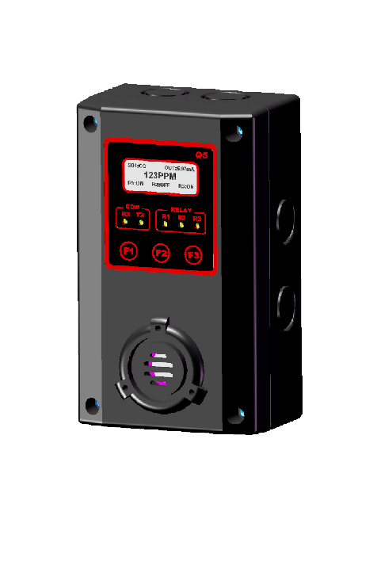
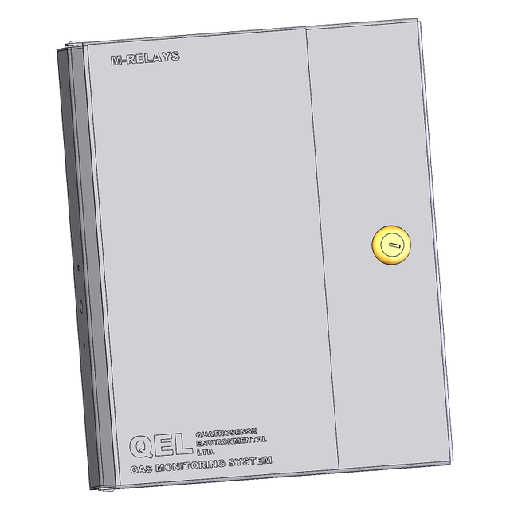
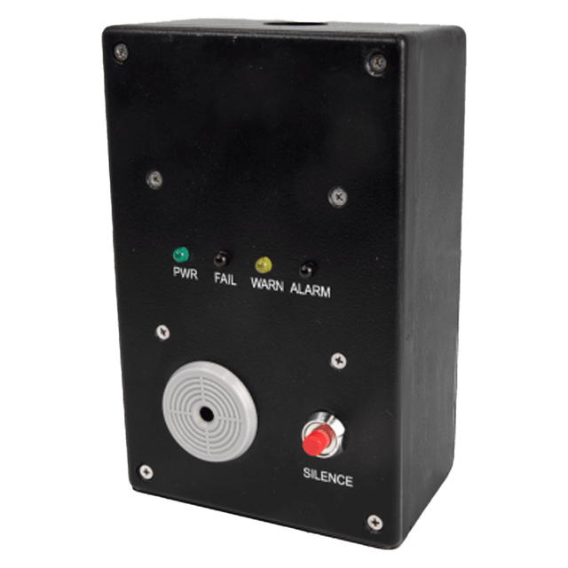
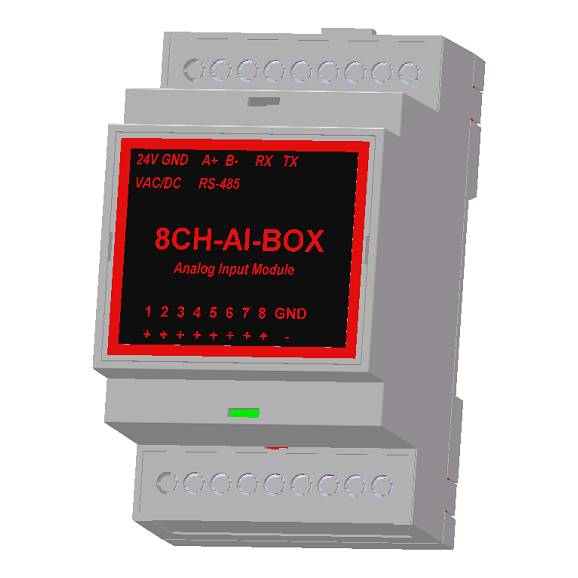
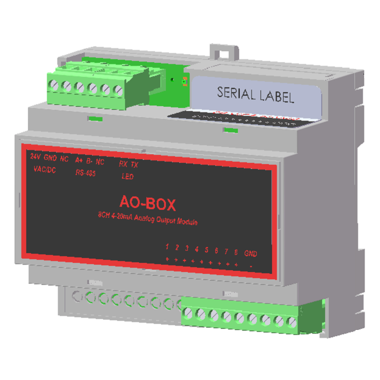
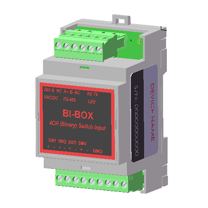
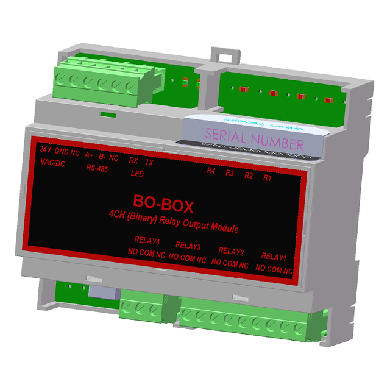

01
Central controller

M-Controller
Programmable multi-channel gas detection controller with distributed sensing, alarm processing, relay control, communications, configuration, and system integration.
View project →Xiangyang Zheng · Principal Engineer · End-to-End Product Development
The differentiator
Very few engineers can truthfully say they personally designed an entire commercial product — from the first requirement to the units shipping off the line. Across the portfolio below, I did exactly that.
Entire products designed by meTechnical expertise
Six disciplines, delivered in-house by one engineer.
Engineering philosophy
Great industrial products are created when a single engineer truly understands the complete engineering lifecycle — from the first concept to the last unit shipped and supported in the field.
Featured work
Designed end to end — electronics, firmware, software, mechanics, and certification.

Refrigerant safety · Industrial IoT
Modern refrigerant detection platform with embedded control, a BACnet stack ported from the open-source BACnet Stack project, NFC commissioning, and an Android configuration and firmware-download app.
Central controller
Programmable multi-channel gas-detection controller and alarm system — distributed sensing, relay logic, field communications, and system integration, with matching PC configuration software.

Explosion-proof transmitter
Explosion-proof toxic and combustible gas transmitter for hazardous, Class I Division 2 areas — digital display with STEL/TWA/peak, tri-colour alarm backlight, and non-intrusive calibration across electrochemical, catalytic-bead, PID, and infrared sensors.
Designed end-to-end
Gas detection · Controllers · BACnet gateways · Sampling systems
Central controller
Programmable multi-channel gas detection controller with distributed sensing, alarm processing, relay control, communications, configuration, and system integration.
View project →Central controller

Universal 256-sensor gas detection controller and alarm unit, interfacing with up to 128 remote digital transmitters and 128 analog inputs while driving 128 relay and 128 analog outputs. Touchscreen HMI with Modbus communications.
Four-channel controller

Four-channel gas monitoring and control system — a microprocessor-based, field-programmable controller managing up to four QEL digital sensor/transmitters over an RS-485 smart-sensor port, with pluggable relay, 4-20 mA and RS-485 option boards in an IP66 / NEMA 4X enclosure.
BACnet/IP converter

BACnet Application Specific Controller (B-ASC) that puts a QEL controller gas-detection system — Q-Controller, M-Controller, or Q4 Controller — onto a BACnet/IP network, bridging the controller's RS-485 field bus to Ethernet as individual BACnet objects.
Gas transmitter family

Fixed gas detection transmitter platform developed as a complete sensing product, including electronics, enclosure, firmware, an embedded BACnet MS/TP communication stack on the B5 variant, calibration workflow, production testing, and documentation.
Gas transmitter family

Networked gas transmitter platform integrating sensor interfaces, local display and controls, alarm functions, field communications, configuration tools, and manufacturing support.
Advanced transmitter

Industrial gas detection transmitter designed across hardware, firmware, sensing, mechanics, user interface, diagnostics, test procedures, and field-service documentation.
Explosion-proof transmitter
Explosion-proof toxic and combustible gas transmitter for hazardous, Class I Division 2 areas. Digital concentration display with STEL, TWA, and peak readings, a three-colour alarm backlight, and non-intrusive calibration. Q8 with 4-20 mA and RS-485 Modbus, B8 with RS-485 BACnet MS/TP.
Infrared refrigerant detector

Infrared refrigerant detection platform combining optical and electronic design, embedded signal processing, an integrated BACnet MS/TP communication stack, calibration methods, fault diagnostics, mechanical packaging, and factory test procedures.
Remote display

Remote display and annunciation platform for distributed gas detection systems, including communications, interface electronics, embedded firmware, enclosure design, and installation documentation.
Refrigerant safety platform
Modern refrigerant detection platform with embedded control, a BACnet protocol stack ported from the open-source BACnet Stack project (BTL Listed at Protocol Revision 26), fieldbus communications, NFC commissioning, configurable manufacturing data, diagnostics, and Android-based configuration and firmware download.
Sample-draw system

One-channel sampling and conditioning system that draws air from a remote area or confined space for analysis. A motorised pump with clogging and water detection, a precision flow meter with direct-reading scale, and a replaceable in-line disk filter, all housed in a NEMA 4X enclosure for continuous operation in harsh environments.
BACnet protocol engineering
I ported and integrated the BACnet communication stack — based on the open-source BACnet Stack project — on the B5, QIRF-II, and QVRF transmitters, covering the MS/TP data link, object model, standard services, alarming, and device configuration. The QVRF implementation was independently verified and achieved BTL Listing at BACnet Protocol Revision 26 (PR26). The same work also drives the BAC-Box, a BACnet Application Specific Controller that presents a QEL controller gas-detection system (Q-Controller, M-Controller, or Q4 Controller) as individual BACnet objects on a BACnet/IP network.
* Certification scope depends on the specific product model, sensor, revision, and listing. Selected products achieved UL 2075 certification, while many products were evaluated or listed to UL 61010 requirements. BTL Listing applies to the specific QVRF product and revision submitted to the BACnet Testing Laboratories. Certification marks should only be shown with the exact approved model and listing information.
System network
Relays · I/O · Annunciators · Switches
The controllers anchor a larger detection network. I designed the surrounding modules that expand I/O, drive remote relays and annunciators, and distribute switching and display across a site.

Remote relay module — up to 11 modules give a maximum of 99 relays.

Remote display with on-board relays.

LED annunciator panel.

Remote switch that commands the M-Controller or Q4 Controller to activate relays.

8-channel analog input module (up to 16).

8-channel analog output module (up to 16).

4-channel relay input module (up to 31).

4-channel relay output module (up to 31).

DIN-rail mounting box for expansion modules.

Remote switch for the Q-Controller.
Software ecosystem
The tools that complete each product — all designed in-house.
Windows / PC
PC applications for device setup, network configuration, calibration, commissioning, diagnostics, and production support — including the M-View system tool.
Android / NFC
An Android NFC application for fast commissioning and service of QVRF devices — configuration, cloning, calibration, diagnostics, and firmware download over NFC.
Certifications & compliance
My role spanned design-for-compliance through the full evaluation, testing, and listing of these products.
Gas and vapor detector safety standard. Led product design and engineering support through evaluation and listing of certified detectors.
Safety for measurement, control, and laboratory equipment. Engineered products to meet construction and test requirements.
Canadian certification. Supported evaluation and compliance for the controller and transmitter platforms.
European conformity. Ensured products met CE and EMC directives for the European market.
BACnet Testing Laboratories listing. Ported and verified the BACnet stack — QVRF achieved BTL Listing at Protocol Revision 26.
Designed for and supported EMC immunity/emissions and environmental qualification — temperature, humidity, and vibration.
Certification scope depends on the specific product model, sensor, revision, and listing. Marks should only be shown with the exact approved model and listing information.
Product timeline
The progression of platforms I have taken to production.
Innovation
About
Principal Engineer · Product Creator
I am a Principal Engineer specializing in industrial gas detection, embedded systems, safety instrumentation, and Industrial IoT.
Throughout my career — since 1995 — I have led the complete development of multiple commercial products, from concept and architecture through electronics, firmware, mechanical design, certification, manufacturing, and global deployment.
My expertise spans analog electronics, precision sensor interfaces, embedded firmware, Windows and Android software, industrial communication protocols, and safety-certified product development — and I later led the complete rebranding of this portfolio from QEL to Greystone. Product names, trademarks, certification marks, and commercial materials remain the property of their respective owners.
Contact
Open to principal engineering leadership, product development, and consulting in gas detection, embedded systems, and Industrial IoT.
xyzheng69@hotmail.com